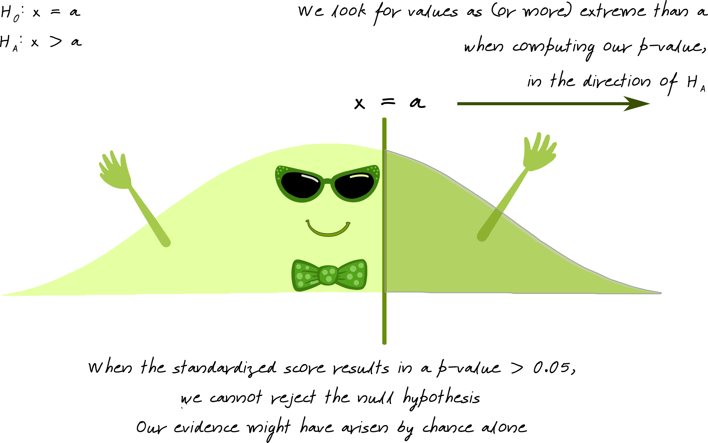
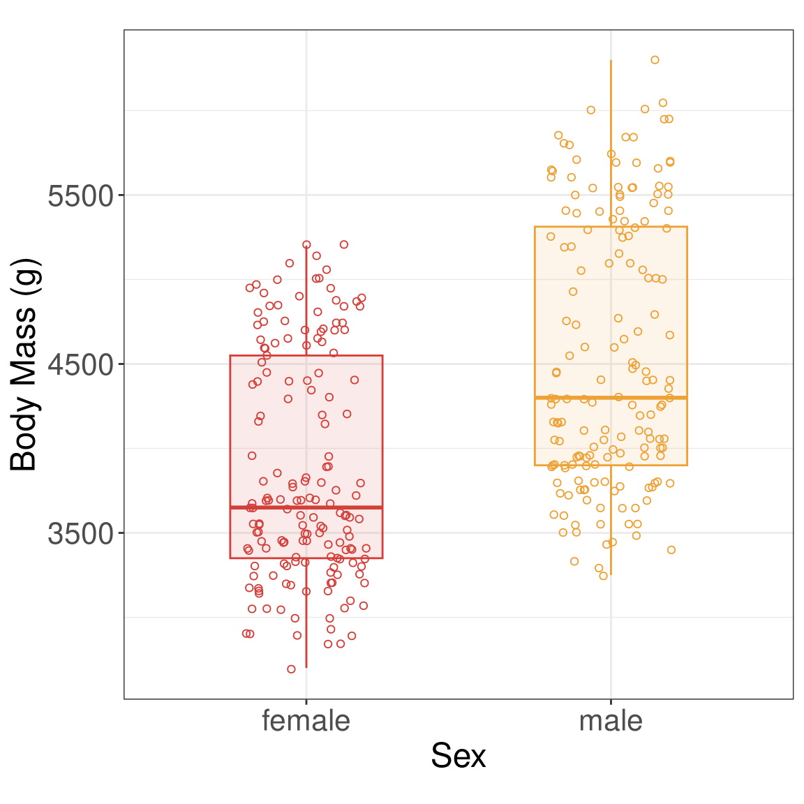
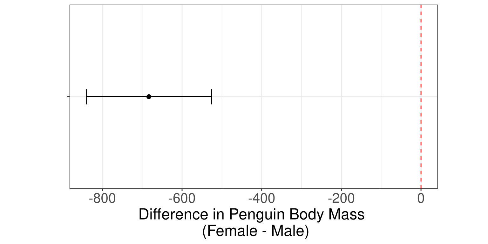
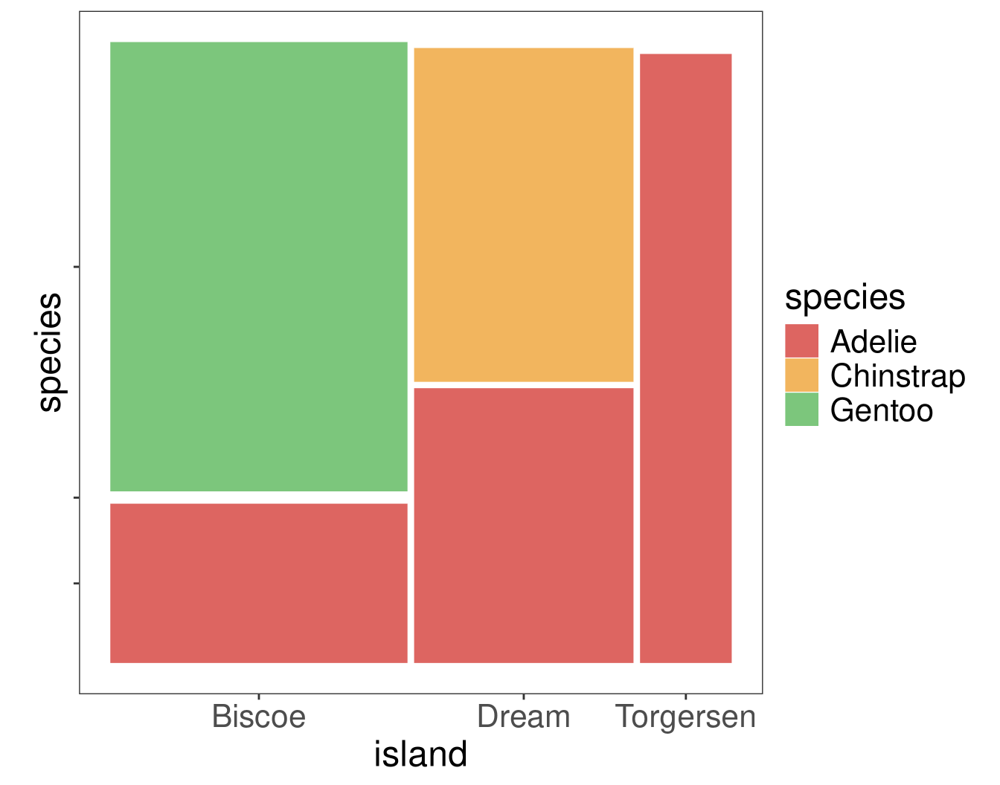
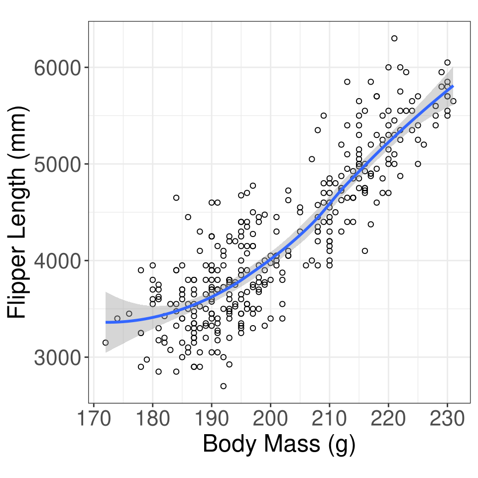
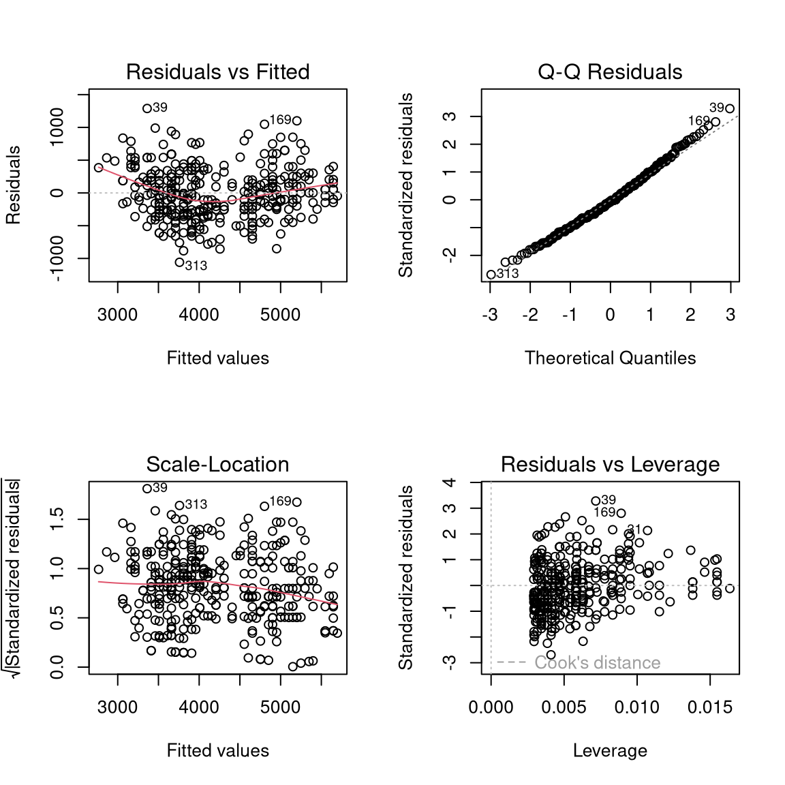
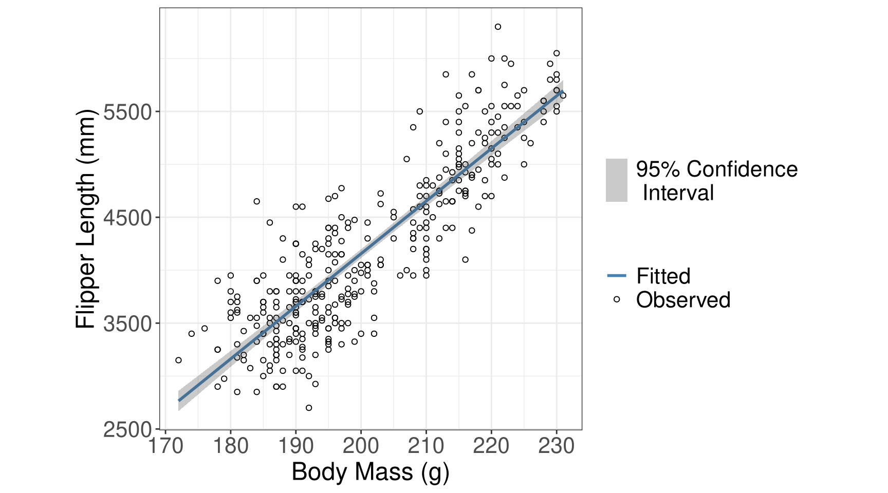
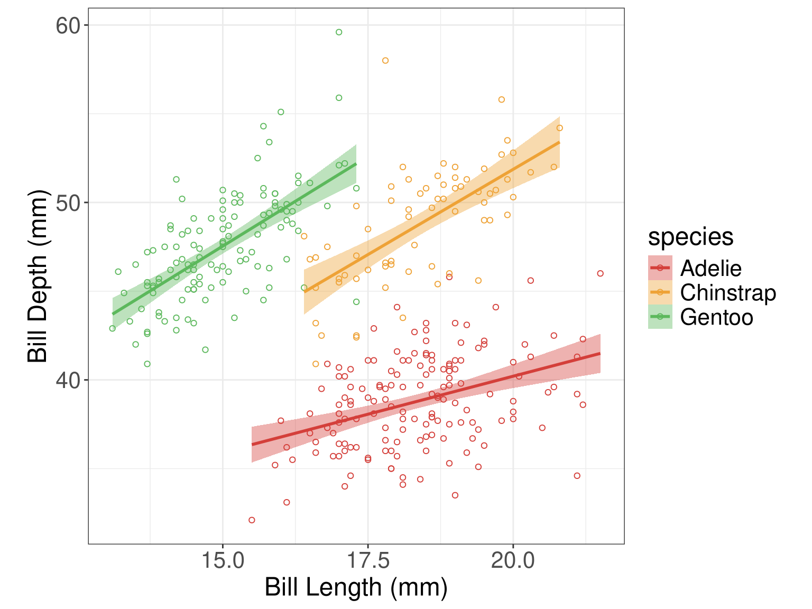

Basic Statistical Tests
Outline
p-values
confidence intervals
t-tests
chi-square tests
simple regression
Five Step Hypothesis Testing Procedure
Step 1: State your null and alternate hypothesis.
Step 2: Collect data.
Step 3: Perform a statistical test.
Step 4: Decide whether to reject or fail to reject your null hypothesis.
Step 5: Present your findings.
Statistical Hypotheses
Null Hypothesis what we are hoping to disprove?
Alternative Hypothesis if random chance isn’t the reason, then what?
What is a p-value?

Image source: Susan VanderPlas UNL Extension
What is a p-value?
Image source: Susan VanderPlas UNL Extension
What is a confidence interval?
Confidence intervals are a range of values around the central estimate obtained from the sample data.
Image source: Susan VanderPlas UNL Extension
Penguins Data

Two-sample independent t-test
Research Question Is there a difference in the body mass (g) of penguins between male and female penguins?
Data
| sex | body_mass_g |
|---|---|
| male | 3750 |
| female | 3800 |
| female | 3250 |
Numerical Summary
| sex | mean | sd |
|---|---|---|
| female | 3862.3 | 666.2 |
| male | 4545.7 | 787.6 |
Graphical Summary

Two-sample t-test
- y: The variable name of the quantitative response.
- x: The variable name of the grouping variable (or treatment).
- data: The name of the data set
- alternative: The alternative hypothesis. Options include “two.sided”, “less”, or “greater.”
- mu: The value assumed to be the true difference in means.
- paired: Whether or not to use a paired t-test.
- var.equal: Whether or not the variances are equal between the two groups.
- conf.level: The confidence level to use for the test.
Two-sample independent t-test
- Null: the mean body mass for female penguins is equal to the mean body mass for male penguins (female - male \(= 0\))
- Alternative: the mean body mass for female penguins is not equal to the mean body mass for male penguins (female - male \(\ne 0\))
Welch Two Sample t-test
data: body_mass_g by sex
t = -8.5545, df = 323.9, p-value = 4.794e-16
alternative hypothesis: true difference in means between group female and group male is not equal to 0
95 percent confidence interval:
-840.5783 -526.2453
sample estimates:
mean in group female mean in group male
3862.273 4545.685 Two-sample independent t-test (table results)
Extract specific output
Summarize results with library(broom)
| estimate | estimate1 | estimate2 | statistic | p.value | parameter | conf.low | conf.high | method | alternative |
|---|---|---|---|---|---|---|---|---|---|
| -683.4 | 3862.3 | 4545.7 | -8.6 | <0.001 | 323.9 | -840.6 | -526.2 | Welch Two Sample t-test | two.sided |
Two-sample independent t-test (graphical results)
ggplot(penguins_results, aes(x = NA, y = estimate)) +
geom_point(size = 2) +
geom_errorbar(aes(ymin = conf.low, ymax = conf.high), width = 0.2) +
geom_hline(yintercept = 0, linetype = "dashed", color = "red") +
theme_bw() +
theme(aspect.ratio = 0.5, axis.text.y = element_blank()) +
xlab("") + ylab("Difference in Body Mass \n (Female - Male)") +
coord_flip()
Your Turn
What if you wanted the difference to be male - female? (Hint: use
relevel())The default confidence level is 95%, how would you change it to a 90% confidence level?
- Does your p-value change?
- How about your confidence interval?
Your Turn
- What if you wanted the difference to be male - female?
[1] "female" "male" [1] "male" "female"| estimate | estimate1 | estimate2 | statistic | p.value | parameter | conf.low | conf.high | method | alternative |
|---|---|---|---|---|---|---|---|---|---|
| 683.4 | 4545.7 | 3862.3 | 8.6 | <0.001 | 323.9 | 526.2 | 840.6 | Welch Two Sample t-test | two.sided |
Your Turn
- The default confidence level is 95%, how would you change it to a 90% confidence level?
- Does your p-value change?
- How about your confidence interval?
[1] 4.793891e-16[1] 526.2453 840.5783
attr(,"conf.level")
[1] 0.95[1] 4.793891e-16[1] 551.6295 815.1941
attr(,"conf.level")
[1] 0.9Chi-square test of independence
Research Question Are island and the species of penguin associated?
Data
| species | island |
|---|---|
| Adelie | Torgersen |
| Adelie | Torgersen |
| Adelie | Torgersen |
Numerical Summary
species
island Adelie Chinstrap Gentoo
Biscoe 44 0 124
Dream 56 68 0
Torgersen 52 0 0Graphical Summary

Chi-square test of independence
Chi-square test of independence
Pearson's Chi-squared test
data: penguins3$island and penguins3$species
X-squared = 299.55, df = 4, p-value < 2.2e-16
Pearson's Chi-squared test with simulated p-value (based on 2000
replicates)
data: penguins3$island and penguins3$species
X-squared = 299.55, df = NA, p-value = 0.0004998Simple Regression
Research Question Is there a relationship between penguin body mass and flipper length?
Data
| body_mass_g | flipper_length_mm |
|---|---|
| 3750 | 181 |
| 3800 | 186 |
| 3250 | 195 |
Numerical Summary
Pearson Correlation
[1] 0.8712018Graphical Summary

Simple Regression
\[y = \text{intercept} + \text{slope} \cdot x + \text{error}\]
Simple Regression
Call:
lm(formula = body_mass_g ~ flipper_length_mm, data = penguins4)
Residuals:
Min 1Q Median 3Q Max
-1058.80 -259.27 -26.88 247.33 1288.69
Coefficients:
Estimate Std. Error t value Pr(>|t|)
(Intercept) -5780.831 305.815 -18.90 <2e-16 ***
flipper_length_mm 49.686 1.518 32.72 <2e-16 ***
---
Signif. codes: 0 '***' 0.001 '**' 0.01 '*' 0.05 '.' 0.1 ' ' 1
Residual standard error: 394.3 on 340 degrees of freedom
Multiple R-squared: 0.759, Adjusted R-squared: 0.7583
F-statistic: 1071 on 1 and 340 DF, p-value: < 2.2e-16Simple Regression (evaluate model)

Simple Regression (results)
\[y_{i} = \beta_0 + \beta_1 \cdot x_{i} + \epsilon_{i}\]
- \(y_{i}\) is the body mass (g) for penguin \(i = 1, ..., n\)
- \(\beta_0\) is the intercept coefficient
- \(\beta_1\) is the slope coefficient
- \(x_{i}\) is the flipper length (mm) for penguin \(i = 1, ..., n\)
- \(\epsilon_i\) is the error for penguin \(i = 1, ..., n\) where \(\epsilon \sim N(0, \sigma^2)\)
| term | estimate | std.error | statistic | p.value |
|---|---|---|---|---|
| (Intercept) | -5780.83 | 305.81 | -18.90 | <0.001 |
| flipper_length_mm | 49.69 | 1.52 | 32.72 | <0.001 |
\(\text{body mass}_{i} = -5780.83 + 49.56 \cdot \text{flipper length}_{i} + \epsilon_{i}\) where \(\epsilon \sim N(0, \sigma^2)\)
Simple Regression (results)
| term | estimate | std.error | statistic | p.value |
|---|---|---|---|---|
| (Intercept) | -5780.83 | 305.81 | -18.90 | <0.001 |
| flipper_length_mm | 49.69 | 1.52 | 32.72 | <0.001 |
Hypotheses
\[H_0: \beta_1 = 0 \text{ (the slope is equal to 0)}\] \[H_A: \beta_1 \ne 0 \text{ (the slope is not equal to 0)}\]
Conclusion
We have evidence to conclude there is an association between flipper length and body mass (t = 32.72; df = 340; p < 0.0001).
Simple Regression (results)

Your Turn: Simple Regression
Fit a linear regression line between bill length and bill depth for each species
